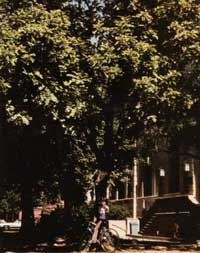

Ceratonia siliqua is a dense shade tree that reaches heights of up to 50 feet. Several thousands of pod-producing evergreens - such as this one - were planted in Pasadena schoolyards during teh Depression by Seventh Day Adventists... who hoped to provide a free, nutritious treat for schoolchildren.